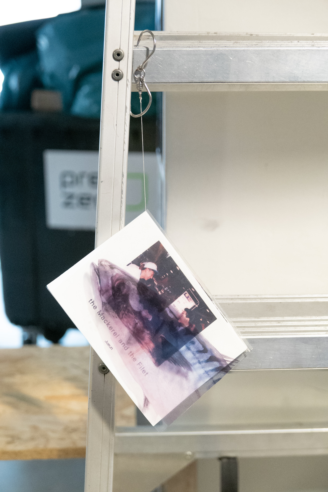
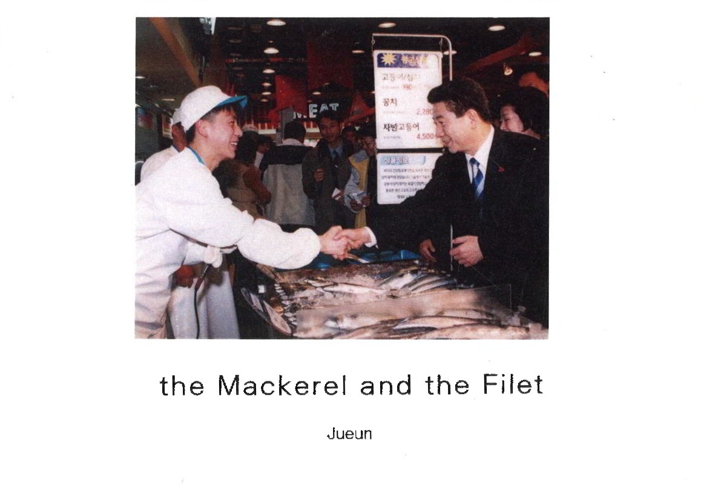
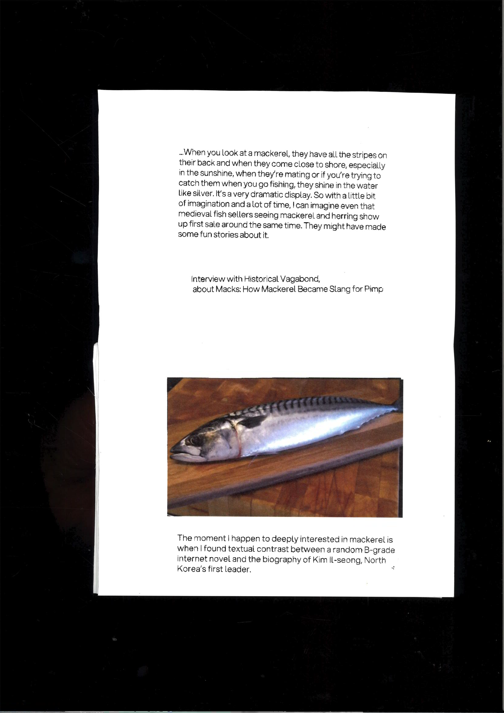
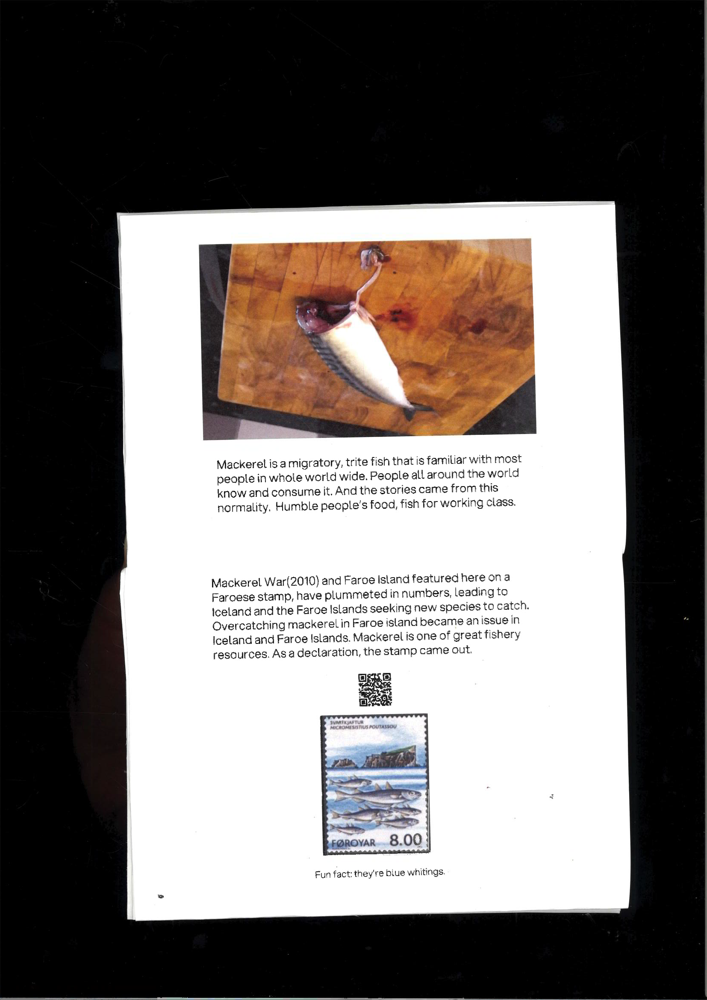
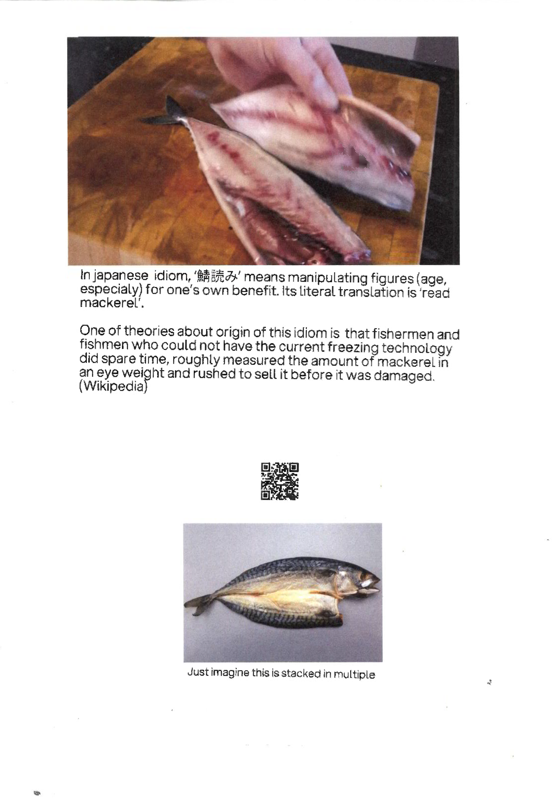
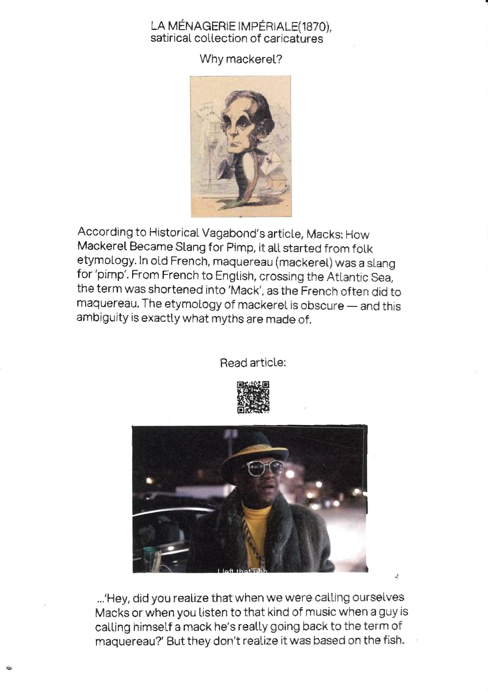
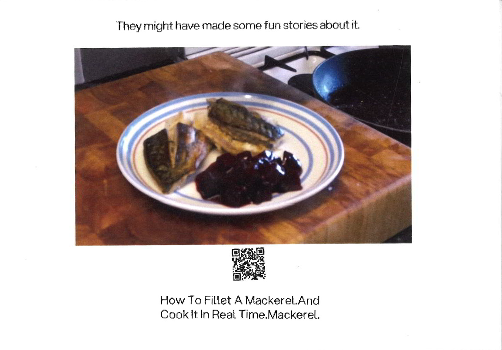
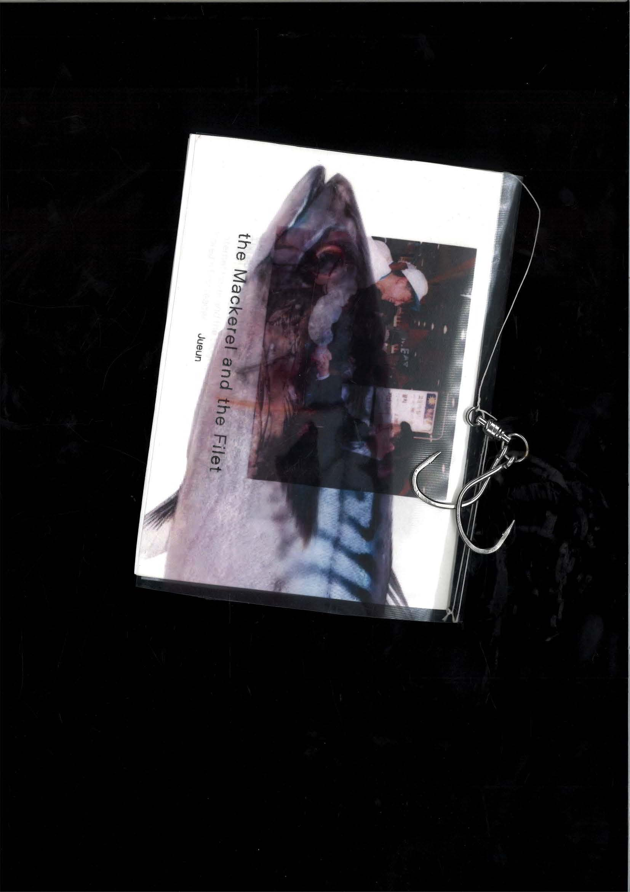

the Fillet and the Fish
the Mackerel and the Filet
The Mackerel and the Filet is a zine that is inspired from the ironic contrast in Korean text about mackerel and interview with Historical Vagabond, a maritime historian wrote the article ‘Macks: How Mackerel Became Slang for Pimp’. Mackerel is one of the most widely distributed migratory fish around the world. This property lead to let it symbolize the working class and its endurance, at the same time produced folk etymology about pimping and concept of deception by its flashy looking and quick spoiling tendency. The name of it is an homage from Levi-Strauss, the Raw and the Cooked. With act of cooking, it reveals how the myth of mackerel is made and how people see it.








